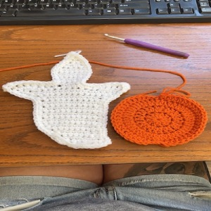

Leafy's Crochet Habit

My great grandmother taught my sister and I to crochet when we were younger. My favorite things to make are blankets however I do enjoy some seasonal crafts as well! Did you know that you cannot purchase machine-made crochet items? Crochet is too intricate of a craft to be replicated by a machine, unlike knitting. No hate on the knitters though, I myself have been looking into becoming bistitchual.
Adding new paragraph to see if it pops up at all.